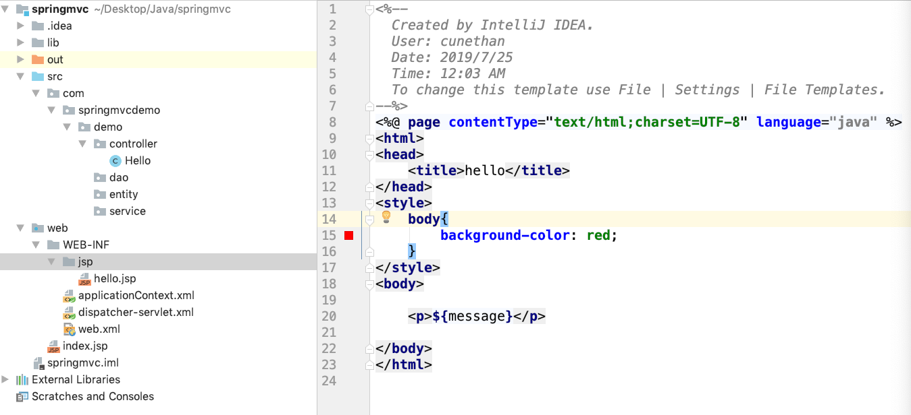
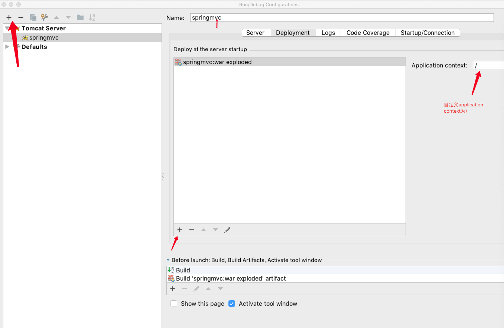

第一个springmvc项目
1. 在idea新建一个spring项目如下，勾选springmvc， 如下图：
2. 新建的项目结构, lib库， src空的项目结构, web下默认的applicationContext.xml， dispatcher-servlet.xml， web.xml， 以及index.jsp
web.xml
<?xml version="1.0" encoding="UTF-8"?>
<web-app xmlns="http://xmlns.jcp.org/xml/ns/javaee"
xmlns:xsi="http://www.w3.org/2001/XMLSchema-instance"
xsi:schemaLocation="http://xmlns.jcp.org/xml/ns/javaee http://xmlns.jcp.org/xml/ns/javaee/web-app_4_0.xsd"
version="4.0">
<context-param>
<param-name>contextConfigLocation</param-name>
<param-value>/WEB-INF/applicationContext.xml</param-value>
</context-param>
<listener>
<listener-class>org.springframework.web.context.ContextLoaderListener</listener-class>
</listener>
<servlet>
<servlet-name>dispatcher</servlet-name>
<servlet-class>org.springframework.web.servlet.DispatcherServlet</servlet-class>
<load-on-startup>1</load-on-startup>
</servlet>
<servlet-mapping>
<servlet-name>dispatcher</servlet-name>
<url-pattern>/</url-pattern>
</servlet-mapping>
</web-app>
applicationContext.xml:
<?xml version="1.0" encoding="UTF-8"?>
<beans xmlns="http://www.springframework.org/schema/beans"
xmlns:xsi="http://www.w3.org/2001/XMLSchema-instance"
xsi:schemaLocation="http://www.springframework.org/schema/beans http://www.springframework.org/schema/beans/spring-beans.xsd">
</beans>
dispatch-servlet.xml(规则为servelet-name+ '-servlet.xml')
<?xml version="1.0" encoding="UTF-8"?>
<beans xmlns="http://www.springframework.org/schema/beans"
xmlns:xsi="http://www.w3.org/2001/XMLSchema-instance"
xmlns:context="http://www.springframework.org/schema/context"
xsi:schemaLocation="http://www.springframework.org/schema/beans http://www.springframework.org/schema/beans/spring-beans.xsd http://www.springframework.org/schema/context http://www.springframework.org/schema/context/spring-context.xsd">
<!--配置需要扫描的包 不然项目找不到需要扫描的包类 项目结构如下面的图 -->
<context:component-scan base-package="com.springmvcdemo.demo"></context:component-scan>
<!--视图解析器 没有配置 在控制器里面返回hello会报500错误-->
<bean class="org.springframework.web.servlet.view.InternalResourceViewResolver">
<!--视图路径-->
<property name="prefix" value="/WEB-INF/jsp/"></property>
<!--视图名称后缀-->
<property name="suffix" value=".jsp"></property>
</bean>
</beans>

3.添加tomcat服务器: run -> Edit Configurations; 添加Artifacts:
4. run启动之后默认访问：http://localhost:8080/index.jsp
http://localhost:8080/hello 访问测试控制器